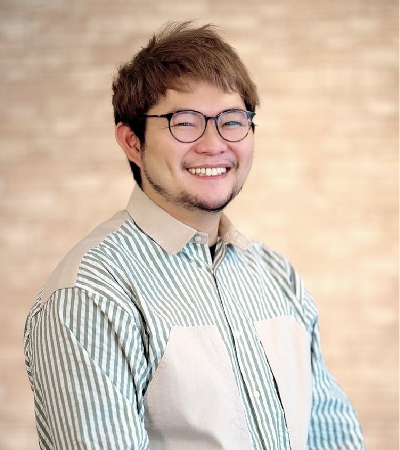
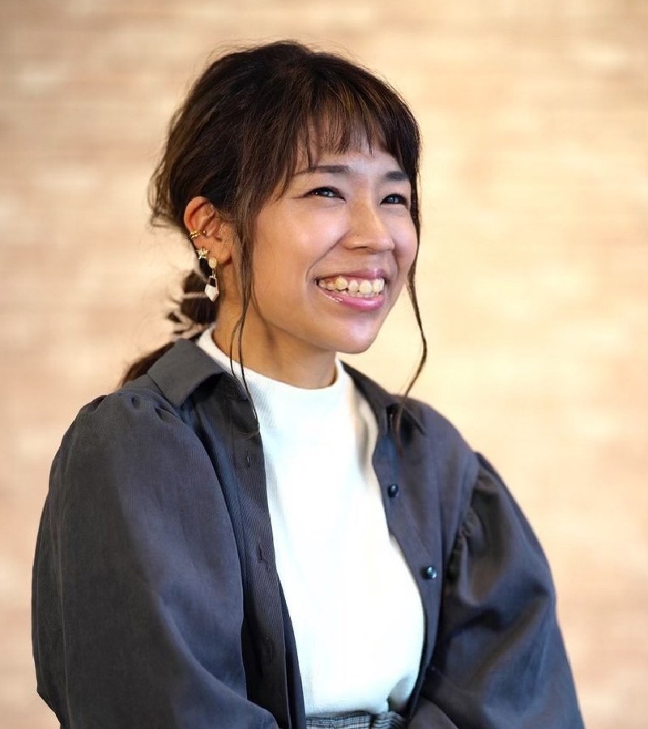
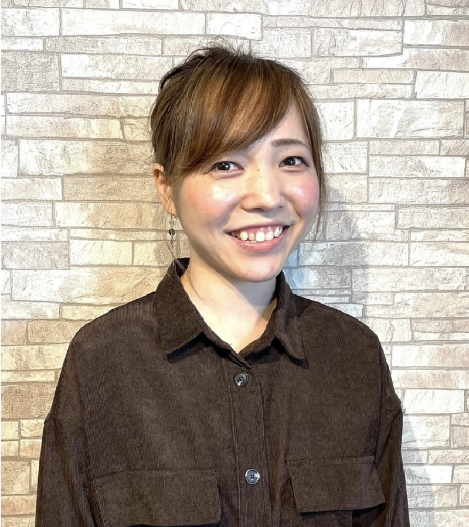

店長/Director
MASAMasato Onda
- 美容歴
- 18年
- 得意なスタイル
- ショート・グラボブ・ボブ・レイヤー
- 好きなイメージ
- ナチュラル・クール・コンサバ・カジュアル
カウンセリングを大切に。
『-5歳を実現します。』悩みやこだわりなど、わがまま・気ままが言える様なスタイリストを目指しています。
再現性の高いカットを実現できる様におうちでのスタイリングの仕方（ドライヤーのかけ方からワックスの使い方）まで丁寧に教えます。
年を重ねる事や大人の女性、大人の男性でいる喜びを持ち日々の生活から感じ、楽しめるライフスタイルにしてみませんか？」
TOP Stylist
RINA Rina Takanashi
- 美容歴
- 10年
- 得意なスタイル
- ショート・ボブ・グラデーションカラー
- 好きなイメージ
- フェミニン・キュート・ガーリー・ナチュラル
しっかりカウンセリングをして似合う髪型、お客様のご要望にお応えします！
女性らしいゆるふわスタイルが得意です☆
また、くせ毛でお悩みの方もご相談ください♪
カラーやアレンジスタイルが得意です。

TOP Stylist
AYAAya Akiyama
- 美容歴
- 10年
- 得意なスタイル
- ボブ・ロングスタイルのカット
- 好きなイメージ
- ナチュラル・キュート・フェミニン
平日週2∼3日出勤（9:45∼14:00）（最終受付カット13:00/カラー12:00）※指名の場合は相談ください。
女性ならではの目線でカウンセリングからスタイリングの仕方まで丁寧に施術させて頂きます。リラックスして過ごして頂けるよう心掛けております。2児の母で子育ての話もいろいろしましょう。
ヘアアレンジも好きなのでお気軽にご相談ください!

TOP Stylist
MIKAMika Shima
- 美容歴
- 8年
- 得意なスタイル
- ナチュラル
- 好きなイメージ
- ナチュラル
地元が神奈川で8年間相模原で働いていました。
まだまだ知らない所が多いので探検したいと思ってます!
趣味はドライブ、旅行、サッカー観戦です。
環境が変わり慣れない部分もありますが、元気に笑顔で接客していきたいと思いますのでよろしくお願いします。
ご予約はこちらから
042-840-96288:30∼18:00（L.O17:00）
RESERVE
- 住所
- 197-0022 東京都福生市本町66-1F KUMA
- 電話番号
- 042-840-9628
- 営業時間
- 8:30∼18:00（L.O17:00）
- 定休日
- 不定休
- アクセス
- JR福生駅西口を出て、三菱東京UFJを過ぎ、一つ目の交差点福生駅前信号を左手に曲がります。（牛浜駅方面）そのまま直進し、吉井生花店さんのお隣にサロンはあります。